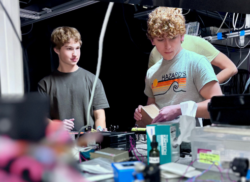

Instructor of Record

PHYS1400: Fundamentals of Scientific Inquiry
PHYS1400 is an elective course for freshmen undergraduates aimed at introducing students to skills in scientific inquiry such as programming in Python, typesetting reports in LaTeX, carrying out literature review, and more: skills that are not often explicitly taught in physics courses. In Spring 2024, I co-developed and co-taught this course with Maggie Huber, a fellow graduate student. Throughout the semester, the students completed group projects and delivered poster presentations about their work. Lecture slides and student posters are available at the link below.
Teaching Assistant
- PHYS 7810: Graduate Special Topics in Physics: Hydrodynamics (Spring 2024), University of Colorado, Boulder
- PHYS 3090: Introduction to Quantum Computing (Spring 2024), University of Colorado, Boulder
- PHYS 1110: General Physics I (Fall 2023), University of Colorado, Boulder
- PHYS 1125: General Physics II for Majors (Spring 2023), University of Colorado, Boulder
- PHYS 1110: General Physics I (Fall 2022), University of Colorado, Boulder
- PHYS 1110: General Physics I (Spring 2022), University of Colorado, Boulder
- PHYS 1110: General Physics I (Fall 2020), University of Colorado, Boulder